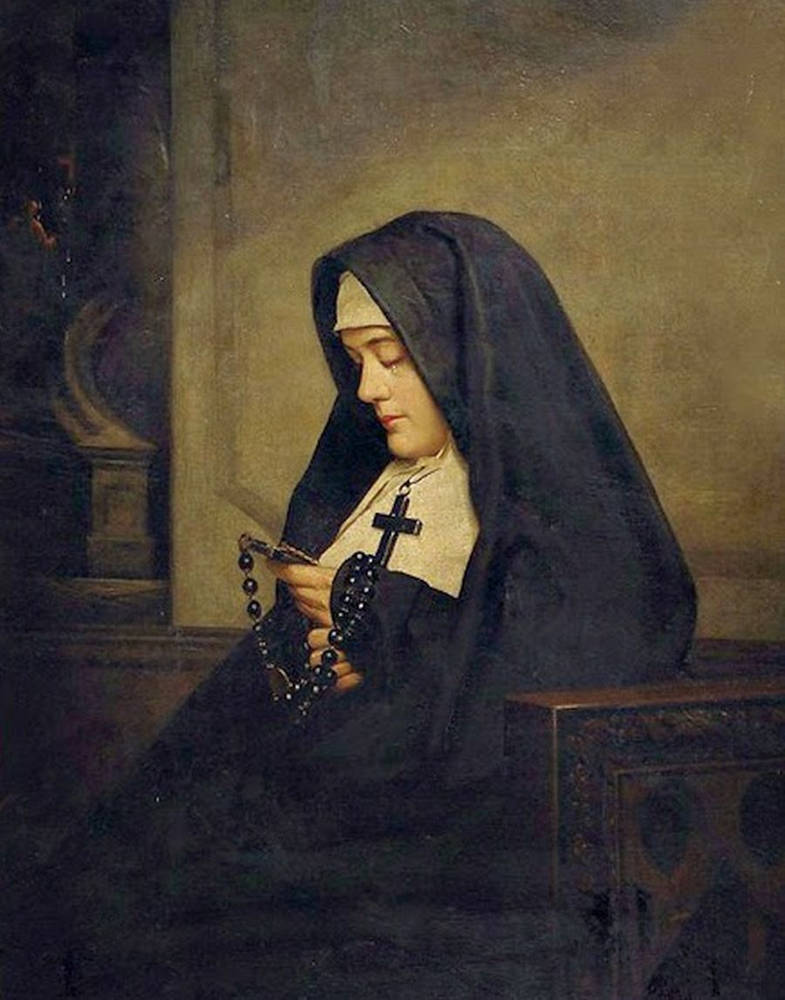
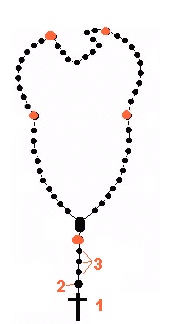
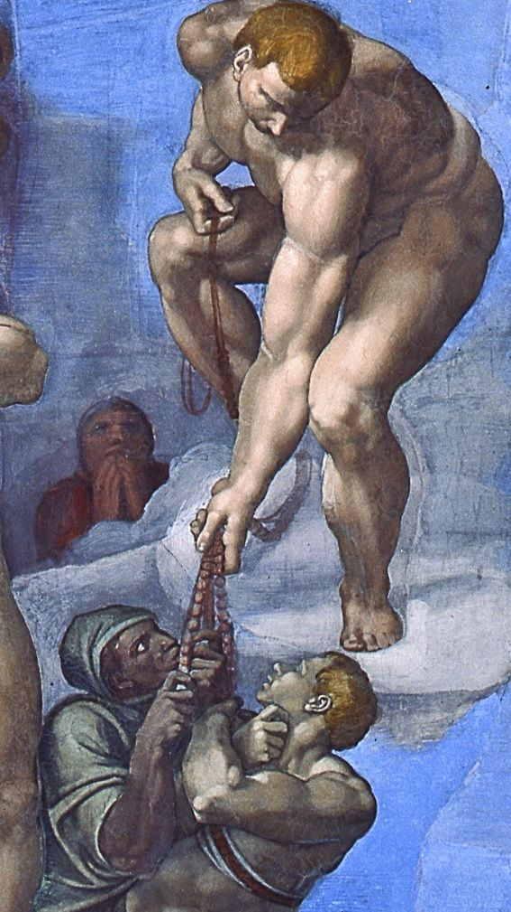

Republished with formatting changes only, and with gratitude, from Fish Eaters.

The 150 Davidic
Psalms (the Psalter of David) have always been prayed by Old
Testament Israel, post-Temple Jews, and by Christians for personal
prayer, communal prayer, lamentations, praise, thanksgiving, and, in the
case of Christians, to demonstrate the fulfillment of prophecy.
They came to form a large part of the Divine Office sung at the
various canonical
hours by religious. Lay people who didn't have copies of Scripture
or the Breviary and lay people and religious who were illiterate would
substitute 150 Pater Nosters (Our Fathers) or Aves (Hail Marys) in place
of the 150 Psalms they could not read.
The prayers were originally counted by transferring pebbles from one bag
to another, but soon enough Christians began to tie a rope with knots on
which to count. This evolved further into using beads or pieces of wood
in place of the knots, and this soon came to be called the "Psalter of
the Laity." Around the end of the first millennium, Rosaries contained
the present five decades (a decade is a set of ten beads), with the
small Ave beads shaped like white lilies for the purity of the Virgin,
and the large Pater beads shaped like red roses for the wounds and
Passion of Christ.
St. Dominic de Guzman popularized the Marian Psalter in the form we have
it today (150 Aves with a Pater after each 10) when Our Lady encouraged
him to pray it that way in response to the Albigensian heresy. So
associated with the Rosary is St. Dominic that the Rosary is often
called the "Dominican Rosary."
Our Lady also appeared to the children at Fatima and asked that the
Rosary be prayed daily, including the "Fatima Prayer," as part of what
must be done in order to prevent Russia from spreading its errors
throughout the world (the other things being the faithful wearing of the
Brown Scapular,
the First Five Saturdays
Devotion, acts of reparation and sacrifice, and the Consecration of
Russia to her Immaculate Heart by the Pope and all the Bishops in union
with him. This last has not been done).
The Rosary, thus, has always been a weapon against heresy and trouble;
in fact, the 7 October 1571 victory of Christendom over Islamic warriors
at the
Battle of Lepanto -- the first naval victory against the infidels --
was attributed directly to the Rosaries prayed by the faithful.
While non-Catholics see the Rosary as a mindless chant, what they don't
understand is that the Rosary is a meditation on the lives of Mary and
Jesus. Each decade (each set of 10 Ave beads in the circular part of the
Rosary beads) represents a single Mystery in their lives, and as the
prayers are prayed, we contemplate that particular Mystery.
There are 3 sets of 5 Mysteries -- the Joyful, Sorrowful, and Glorious
Mysteries. 1
One set of Mysteries is traditionally prayed on different days of the
week, and one who prays a single set (i.e., 50 Aves) can be said to have
"prayed the Rosary," but, literally, a complete Psalter consists of all
15 Mysteries (150 Aves, going around the beads three times + the 3 Aves
that introduce the Rosary). The typical way of Rosary-praying -- i.e.,
praying a third of a Rosary -- is more accurately, but uncommonly,
called praying a "chaplet." (Note that
there are many, many different kinds of chaplets -- some to Jesus, some
to the Holy Ghost, some to Mary and the other Saints, etc. -- each with
different arrangements of prayers and many having their own style of
beads). Like the Mass, what you take emotionally from the
Rosary is what you bring to it, but in any case, emotional highs aren't
the point of prayer. Prayer is for the glory of God.
The Rosary beads themselves can be made of gems, stone, wood, crystal,
metal -- even bakelite or plastic, and they can be of any color
(sometimes the Ave beads will be of one color and the Pater beads of
another). Where the two halves of the Rosary come together is a
centerpiece, usually a medal with a depiction of the Sacred Heart, the Immaculate Heart, Our
Lady, and/or a Saint. Most Rosaries are bought pre-made from Catholic
gift shops, but there are also many Rosary makers who can put together a
customized Rosary for you with your choice of beads and
centerpiece.
There are also small 1-decade Rosaries that are meant to be highly
portable. They're called "Pocket Rosaries" (some are sold to be used in
car travel and are sometimes called "Auto Rosaries" or "Car Rosaries").
There exists, too, an "Irish penal Rosary," invented at the time in
Ireland when Catholics were persecuted, and which is designed to be
easily hidden in the hand. This Rosary consists of a single decade, with
Crucifix at one end, followed by the 10 decade beads, and the larger Our
Father bead. At the opposite end is a ring meant to be worn on each of
the fingers of one hand successively to mark the Mysteries. First, the
ring is worn on the thumb, then the index finger, then the middle, ring
and pinky fingers.
There are also one-decade Rosaries that are worn on the wrist, and,
since at least the 16th century, one-decade "Rosary Rings" worn on the
index finger during prayer time (i.e., they're not worn as jewelry). All
of these types of Rosaries would be used the same way as ordinary
Rosaries, but one would count the same beads 5 times after the
introductory prayers. There are also very long 15-decade Rosaries so
that one can pray all of the Mysteries, going around the beads only
once; these are mostly for the use of religious.
Once you purchase or are given a rosary, take it to a priest and have it
blessed, thereby turning it into a sacramental.
A partial indulgence is
gained, under the usual conditions, when praying a third of the Rosary
(5 decades) continuously (i.e., one can't say a decade, go wash the
dishes, and return to say the other decades).
A plenary indulgence is gained, under the usual conditions, when it is
prayed by a family group or publicly in a church or oratory. The
decades' Mysteries must be announced, and the Mysteries meditated
on.
OK, on to how to pray the Rosary! The words of the Rosary's prayers in English and Latin, and relevant Scripture and Readings for each Mystery follow the basic instructions below. The meditations on the Mysteries were written by by Dom Columba Marmion, O.S.B. Abbot of Maredsous, and were given an Imprimatur by John J. Boylan, D.D. Bishop of Rockford in 1949; Scripture is taken from the Douay-Rheims translation of the Bible.
First,
decide which set of 5 Mysteries you will meditate on (see chart below).
Whichever set of Mysteries would feed your soul best or complements the
day's liturgy are the ones you should pray, though praying certain
Mysteries on certain days of the week or during certain liturgical seasons is
traditional and should be followed as much as possible when doing so
doesn't conflict terribly with the day's liturgy (e.g., if Christmas
falls on a Friday, pray the Joyful Mysteries instead of the Sorrowful
ones). Because the Rosary is often prayed with certain prayer intentions
in mind, many begin by stating their intentions (e.g., "For the
conversion of my friend, for the health of my sister," etc.).
Move counter-clockwise around the circle part of the rosary, and have a
definite rhythm when praying so you don't lose count. Develop a habit of
moving to the next bead only after saying the "Amen" to each prayer. If
you'd like to pray along with someone, and see "how it goes," you can listen to and watch
the Rosary being prayed in videos here.
The Mysteries
Joyful
Sorrowful
Glorious
Mondays; Thursdays; Sundays of Advent, Christmastide & Time After Epiphany
Tuesdays; Fridays; Sundays of Septuagesima & Lent
Wednesdays; Saturdays; Sundays of Eastertide & Time After Pentecost
Annunciation
Visitation
Nativity
Presentation
Finding Jesus in the Temple
Agony in the Garden
The Scourging
Crowning with thorns
Carrying of the Cross
Crucifixion
Resurrection
Ascension
Pentecost
Assumption
Crowning of Mary

1.
State or mentally form any intentions
Kiss the Crucifix
Make the Sign of the Cross
Say the Apostles' Creed
2.
Say the Pater (Our Father)
3.
Say an Ave (Hail Mary) on each of the three beads
Large, red beads:
Say a Gloria (Glory Be)
Say the Fatima Prayer (optional)
Announce the relevant Mystery
Say a Pater
Small black beads:
Say an Ave, one on each bead, while meditating on the relevant Mystery of the set of Mysteries you've chosen (Joyful, Sorrowful, or Glorious) -- one Mystery for each set of ten Ave beads
You will end up back at the first large, red bead with its accompanying
prayers.
When prayed in a group, the leader (or half of the group) prays the
first half of each prayer; the rest of the group prays the second half
in response (the break in each of these prayers is indicated by the
cross + appearing in them). Always begin and end with the Sign of the
Cross.
Variations and Options:
Some people dedicate each of the five Paters of the Rosary (the red
beads in the diagram) to one of the Five Sacred Wounds of
Christ (the wounds in His Hands, Feet, and side), especially when
praying the Sorrowful Mysteries.
Some begin each decade with a plea to God to grant a specific virtue or
gift that is related to each Mystery by St. Louis de Montfort (who
popularized formal Consecration to
the Blessed Virgin Mary) in his "Methods for Saying the Rosary."
They will pray words to the effect of "through this Mystery and through
the intercession of our Holy Mother, we ask..." and then name the grace
sought. The particular virtues and
graces sought through each Mystery are, briefly and then in the words of
St. Louis de Montfort in quotes:
Joyful Mysteries: 1st Mystery:
Humility: "we ask for humility of heart" 2nd Mystery:
Charity: "we ask for a perfect love of our neighbour" 3rd Mystery:
Love of the poor: "we ask for detachment from the things of this world,
love of poverty and
love of the poor" 4th Mystery:
Purity: "we ask for the gift of wisdom and purity of heart and body" 5th
Mystery:
Conversions: "we ask you to convert us and all sinners, heretics,
schismatics and pagans"
Sorrowful Mysteries: 1st Mystery:
Contrition: "we ask for perfect sorrow for our sins and perfect
conformity to your holy will" 2nd Mystery:
Spirit of mortification: "we ask for the grace to mortify our senses"
3rd Mystery:
Detachment from the worldly: "we ask for a deep contempt of the world"
4th Mystery:
Patience: "we ask for great patience in carrying our cross after you all
the days of our life" 5th Mystery:
A holy death: "we ask for a great horror of sin, a love for the Cross
and the grace of a holy
death for us and for those who are now in their last agony"
Glorious Mysteries: 1st Mystery:
Faith: "we ask for a lively faith" 2nd Mystery:
Hope: "we ask for a firm hope and a great longing for heaven" 3rd
Mystery:
Truth: "we ask for your holy wisdom that we may know, taste and practice
your truth and
share it with everyone" 4th Mystery:
Devotion to Our Mother: "we ask for the gift of true devotion to her in
order to live a good life
and have a happy death" 5th Mystery:
Perseverance: "we ask for perseverance and an increase in virtue up to
the moment of our
death and thereafter the eternal crown that is prepared for us"
Some end with the Salve Regina (Hail,
Holy Queen), prayers for the Holy Father, the Litany of
Loreto (the "Litany of the Blessed Virgin Mary"), and/or the prayer to St.
Michael the Archangel. St. Louise de Marillac, who, with St. Vincent
de Paul, co-founded of the Daughters of Charity religious
order, urged parents to end each decade of their rosaries with the
prayer: "With these beads bind my children to your Immaculate Heart."
In October: The Prayer to St.
Joseph is often added as a concluding prayer, especially during the
month of October (this was recommended by Pope Leo XIII).
In November and Rosaries for the Dead: The "Eternal Rest"
prayer is often prayed in place of the Fatima Prayer during the month of
November (especially after dusk on All Saints Day and on All Souls Day)
and during Rosaries prayed for the dead, such as at Funeral Vigils.
The Rosary's Prayers
When Making The Sign of the Cross
In the name of the Father [touch forehead], and of the Son [touch
breast], and of the Holy Ghost [touch left shoulder, then right
shoulder]. Amen.
Latin Version: Signum Crucis
In nomine Patris [touch forehead] et Filii [touch breast] et Spiritus
Sancti [touch left shoulder, then right shoulder]. Amen.
The Apostles' Creed
I believe in God, the Father almighty, Creator of Heaven and earth,
and in in Jesus Christ, His only Son, our Lord. He was conceived by the
Holy Spirit, and born of the Virgin Mary. He suffered under Pontius
Pilate, was crucified, died and was buried. He descended into Hell. On
the third day He rose again. He ascended into Heaven, and is seated at
the right hand of God the Father Almighty. He will come again to judge
the living and the dead. + I believe in the Holy Spirit, the Holy
Catholic Church, the communion of saints, the forgiveness of sins, the
resurrection of the body, and life everlasting. Amen.
Latin Version: Symbolum
Apostolorum
Credo in Deum Patrem omnipotentem, Creatorem caeli et terrae. Et in
Iesum Christum, Filium eius unicum, Dominum nostrum, qui conceptus est
de Spiritu Sancto, natus ex Maria Virgine, passus sub Pontio Pilato,
crucifixus, mortuus, et sepultus, descendit ad inferos, tertia die
resurrexit a mortuis, ascendit ad caelos, sedet ad dexteram Dei Patris
omnipotentis, inde venturus est iudicare vivos et mortuos. + Credo in
Spiritum Sanctum, sanctam Ecclesiam Catholicam, sanctorum communionem,
remissionem peccatorum, carnis resurrectionem, vitam aeternam. Amen.
The Our Father
Our Father, Who art in heaven, Hallowed be Thy Name. Thy Kingdom
come, Thy Will be done, On earth as it is in Heaven. + Give us this day,
our daily bread, And forgive us our trespasses, as we forgive those who
trespass against us. And lead us not into temptation, but deliver us
from evil. Amen.
Latin Version: Pater Noster (Oratio
Dominica)
Pater noster, qui es in caelis, sanctificetur Nomen tuum. Adveniat
regnum tuum. Fiat voluntas tua, sicut in caelo et in terra. + Panem
nostrum quotidianum da nobis hodie, et dimitte nobis debita nostra sicut
et nos dimittimus debitoribus nostris. Et ne nos inducas in tentationem,
sed libera nos a malo. Amen.
Hail Mary
Hail Mary, Full of Grace, The Lord is with thee. Blessed art thou
amongst women, and blessed is the fruit of thy womb, Jesus. + Holy Mary,
Mother of God, pray for us sinners now, and at the hour of death.
Amen.
Latin Version: Ave Maria (Salutatio
Angelica)
Ave Maria, gratia plena, Dominus tecum. Benedicta tu in mulieribus, et
benedictus fructus ventris tui, Iesus. + Sancta Maria, Mater Dei, ora
pro nobis peccatoribus, nunc, et in hora mortis nostrae. Amen.
Glory Be
Glory be to the Father, and to the Son, and to the Holy Ghost. + As
it was in the beginning, is now, and ever shall be, world without end.
Amen.
Latin Version: Doxologia
Minor
Gloria Patri, et Filio, et Spiritui Sancto.+ Sicut erat in principio, et
nunc, et semper, et in saecula saeculorum. Amen.
Fatima Prayer
O My Jesus, + forgive us our sins, save us from the fires of Hell and
lead all souls to Heaven, especially those in most need of Thy mercy.
Amen.
Latin Version: Oratio Fatimae
Oh mi Jesu, dimitte nobis debita nostra, libera nos ab igne inferni,
conduc in caelum omnes animas, praesertim illas quae maxime indigent
misericordia tua. Amen.
See these other pages for other optional concluding prayers and litanies.
Optional:
Scripture and Readings to use in
Announcing and Pondering the Mysteries
Joyful Mysteries
Annunciation: Luke 1:31-32
Behold thou shalt conceive in thy womb, and shalt bring forth a son;
and thou shalt call his name Jesus. He shall be great, and shall be
called the Son of the most High; and the Lord God shall give unto him
the throne of David his father; and he shall reign in the house of Jacob
for ever.
Picture the scene of the Annunciation. God proposes the mystery of the
Incarnation which He will accomplish in the Virgin Mary--but not until
she has given her consent. The accomplishment of the mystery is held in
suspense awaiting the free acceptance of Mary. At this moment Mary
represents all of us in her own person; it is as if God is waiting for
the response of the humanity to which He longs to unite Himself. What a
solemn moment this is! For upon this moment depends the decision of the
most vital mystery of Christianity.
But see how Mary gives her answer. Full of faith and confidence in the
heavenly message and entirely submissive to the Divine Will, the Virgin
Mary replies in a spirit of complete and absolute abandonment: "Behold
the handmaid of the Lord; be it done to me according to Thy word." This
"Fiat" is Mary's consent to the Divine Plan of Redemption. It is like an
echo of the "Fiat" of the creation of the world. But this is a new
world, a world infinitely superior, a world of grace, which God will
cause to arise in consequence of Mary's consent, for at that moment the
Divine Word, the second Person of the Blessed Trinity, becomes Man in
Mary: "And the Word was made Flesh and dwelt among us."
Visitation : Luke 1:42-45
And she cried out with a loud voice, and said: Blessed art thou
among women, and blessed is the fruit of thy womb. And whence is this to
me, that the mother of my Lord should come to me? For behold as soon as
the voice of thy salutation sounded in my ears, the infant in my womb
leaped for joy. And blessed art thou that hast believed, because those
things shall be accomplished that were spoken to thee by the
Lord.
See how the Holy Spirit greets the Virgin Mary through the mouth of
Elizabeth: "Blessed art thou among women and blessed is the fruit of thy
womb! And blessed art thou that hast believed, because those things
shall be accomplished that were spoken to thee by the Lord."
Blessed indeed, for by this faith in the word of God the Virgin Mary
became the Mother of Christ.
What finite creature has ever received honor such as this from the
Infinite Being?
Mary gives all the glory to the Lord for the marvelous things which are
accomplished in her. From the moment of the Incarnation the Virgin
Mother sings in her heart a canticle full of love and gratitude.
In the presence of her cousin Elizabeth she allows the most profound
sentiments of her heart to break forth in song; she intones the
"Magnificat" which, in the course of centuries, her children will repeat
with her to praise God for having chosen her among all women:
"My soul magnifies the Lord and my spirit rejoices in God my Savior,
Because He has regarded the lowliness of His handmaid... Because He Who
is mighty has done great things for me And holy is His name."
Nativity: Luke 2:6-7
And it came to pass, that when they were there, her days were
accomplished, that she should be delivered. And she brought forth her
firstborn son, and wrapped him up in swaddling clothes, and laid him in
a manger; because there was no room for them in the inn.
The Virgin Mary sees in the Infant that she has given to the world, a
child in appearance like all other children, the very Son of God. Mary's
soul was filled with an immense faith which welled up in her and
surpassed the faith of all the just men of the Old Testament; this is
why she recognized her God in her own Son.
This faith manifests itself externally by an act of adoration. From her
very first glance at Jesus, the Virgin prostrated herself interiorly in
a spirit of adoration so profound that we can never fathom its
depth.
In the heart of Mary are joined in perfect harmony a creature's
adoration of her God and a Mother's love for her only Son.
How inconceivably great the joy in the soul of Jesus must have been as
He experienced this boundless love of His Mother! Between these two
souls took place ceaseless exchanges of love which brought them into
ever closer unity. O wonderful exchange: to Mary Jesus gives the
greatest gifts and graces, and to Jesus Mary gives her fullest
cooperation: after the union of the Divine Persons in the Blessed
Trinity and the hypostatic union of the divine and human natures in the
Incarnation, no more glorious or more profound union can be conceived
than the union between Jesus and Mary.
Presentation: Luke 2:22-24
And after the days of her purification, according to the law of
Moses, were accomplished, they carried him to Jerusalem, to present him
to the Lord: As it is written in the law of the Lord: Every male opening
the womb shall be called holy to the Lord: And to offer a sacrifice,
according as it is written in the law of the Lord, a pair of
turtledoves, or two young pigeons...
On the day of the Presentation God received infinitely more glory than
He had hitherto received in the temple from all the sacrifices and all
the holocausts of the Old Testament. On this day it is His own Son Jesus
Who is offered to Him, and Who offers to the Father the infinite homage
of adoration, thanksgiving, expiation and supplication.
This is indeed a gift worthy of God.
And it is from the hands of the Virgin, full of grace, that this
offering, so pleasing to God, is received. Mary's faith is perfect.
Filled with the wisdom of the Holy Spirit, she has a clear understanding
of the value of the offering which she is making to God at this moment;
by His inspirations the Holy Spirit brings her soul into harmony with
the interior dispositions of the heart of her Divine Son.
Just as Mary had given her consent in the name of all humanity when the
angel announced to her the mystery of the Incarnation, so also on this
day Mary offers Jesus to the Father in the name of the whole human race.
For she knows that her Son is "the King of Glory, the new light
enkindled before the dawn, the Master of life and death."
Finding in the Temple: Luke 2:46-47
And it came to pass, that, after three days, they found him in the
temple, sitting in the midst of the doctors, hearing them, and asking
them questions. And all that heard him were astonished at his wisdom and
his answers.
"How is it that you sought Me? Did you not know that I must be about My
Father's business?" This is the answer that Jesus gave to His Mother
when, after three days' search she had the joy of finding Him in the
Temple.
These are the first words coming from the lips of the Word Incarnate to
be recorded in the Gospel.
In these words Jesus sums up His whole person, His whole life, His whole
mission. They reveal His Divine Sonship; they testify to His
supernatural mission. Christ's whole life will only be a clarifying and
magnificent exposition of the meaning of these words.
St. Luke goes on to tell us that Mary "did not understand the word that
He spoke." But even if Mary did not grasp the full significance of these
words, she did not doubt that Jesus was the Son of God. This is why she
submitted in silence to that Divine Will which had demanded such a
sacrifice of her love.
"Mary kept these words of Jesus carefully in her heart." She kept them
in her heart, for there was the tabernacle in which she adored the
mystery concealed in the words of her Son, waiting until the full light
of understanding would be granted her.
Sorrowful Mysteries
Agony in the Garden: Matthew 26:36-39
Then Jesus came with them into a country place which is called
Gethsemani; and he said to his disciples: Sit you here, till I go yonder
and pray. And taking with him Peter and the two sons of Zebedee, he
began to grow sorrowful and to be sad. Then he saith to them: My soul is
sorrowful even unto death: stay you here, and watch with me. And going a
little further, he fell upon his face, praying, and saying: My Father,
if it be possible, let this chalice pass from me. Nevertheless not as I
will, but as thou wilt.
It is for the love of His Father above all else that Jesus willed to
undergo His Passion.
Behold Jesus Christ in His agony. For three long hours weariness, grief,
fear and anguish sweep in upon His soul like a torrent; the pressure of
this interior agony is so immense that blood bursts forth from His
sacred veins. What an abyss of suffering is reached in this agony! And
what does Jesus say to His Father? "Father, if it be possible, let this
chalice pass from Me." Can it be that Jesus no longer accepts the Will
of His Father? Oh! certainly He does. But this prayer is the cry of the
sensitive emotions of poor human nature, crushed by ignominy and
suffering. Now is Jesus truly a "Man of Sorrows." Our Savior feels the
terrible weight of His agony bearing down upon His shoulders. He wants
us to realize this; that is why He utters such a prayer.
But listen to what He immediately adds: "Nevertheless, Father, not My
will but Thine be done." Here is the triumph of love. Because He loves
His Father, He places the Will of His Father above everything else and
accepts every possible suffering in order to redeem us.
Scourging at the Pillar: Matthew 27:25-26
And the whole people answering, said: His blood be upon us and our
children. Then he released to them Barabbas, and having scourged Jesus,
delivered him unto them to be crucified.
Christ substituted Himself voluntarily for us as a sacrificial victim
without blemish in order to pay our debt, and, by the expiation and the
satisfaction which He made for us, to restore the Divine life to us.
This was the mission which Christ came to fulfill, the course which He
had to run. "God has placed upon Him"--a man like unto ourselves, of the
race of Adam, but entirely just and innocent and without sin--"the
iniquity of us all."
Since Christ has become, so to speak, a sharer in our nature and taken
upon Himself the debt of our sin, He has merited for us a share in His
justice and holiness. In the forceful words of St. Paul, God, "by
sending His Son in the likeness of sinful flesh as a sin-offering, has
condemned sin in the flesh." And with an impact still more stunning, the
Apostle writes: "For our sakes He (God) made Him (Christ) to be sin who
knew nothing of sin." How startling this expression is: "made Him to be
sin"! The Apostle does not say "sinner," but--what is still more
striking--"sin"!
Let us never forget that "we have been redeemed at great price by the
precious blood of Christ as of a lamb without blemish and without
spot."
Crowning with Thorns: Matthew 27:28-29
And stripping him, they put a scarlet cloak about him. And platting
a crown of thorns, they put it upon his head, and a reed in his right
hand. And bowing the knee before him, they mocked him, saying: Hail,
king of the Jews.
Christ Jesus becomes an object of derision and insults at the hands of
the temple servants. Behold Him, the all-powerful God, struck by sharp
blows; His adorable face, the joy of the saints, is covered with
spittle; a crown of thorns is forced down upon His head; a purple robe
is placed upon His shoulders as a mock of derision; a reed is thrust
into His hand; the servants genuflect insolently before Him in mockery.
What an abyss of ignominy! What humiliation and disgrace for One before
Whom the angels tremble!
The cowardly Roman governor imagines that the hatred of the Jews will be
satisfied by the sight of Christ in this pitiful state. He shows Him to
the crowd: "Ecce Homo--Behold the Man!"
Let us contemplate our Divine Master at this moment, plunged into the
abyss of suffering and ignominy, and let us realize that the Father also
presents Him to us and says to us: "Behold My Son, the splendor of My
glory--but bruised for the sins of My people."
Carrying the Cross: John 19:12-18
And from henceforth Pilate sought to release him. But the Jews cried
out, saying: If thou release this man, thou art not Caesar's friend. For
whosoever maketh himself a king, speaketh against Caesar. Now when
Pilate had heard these words, he brought Jesus forth, and sat down in
the judgment seat, in the place that is called Lithostrotos, and in
Hebrew Gabbatha. And it was the parasceve of the pasch, about the sixth
hour, and he saith to the Jews: Behold your king. But they cried out:
Away with him; away with him; crucify him. Pilate saith to them: Shall I
crucify your king? The chief priests answered: We have no king but
Caesar. Then therefore he delivered him to them to be crucified. And
they took Jesus, and led him forth. And bearing his own cross, he went
forth to that place which is called Calvary, but in Hebrew Golgotha.
Where they crucified him, and with him two others, one on each side, and
Jesus in the midst.
Let us meditate upon Jesus Christ on the way to Calvary laden with His
cross. He falls under the weight of this burden. To expiate sin, He
wills to experience in His own flesh the oppression of sin. Fearing that
Jesus will not reach the place of crucifixion alive, the Jews force
Simon of Cyrene to help Christ to carry His cross, and Jesus accepts
this assistance.
In this Simon represents all of us. As members of the Mystical Body of
Christ, we should all help Jesus to carry His Cross. This is the one
sure sign that we belong to Christ--if we carry our cross with
Him.
But while Jesus carried His cross, He merited for us the strength to
bear our trials with generosity. He has placed in His cross a sweetness
which makes ours bearable, for when we carry our cross it is really His
that we receive. For Christ unites with His own the sufferings, sorrows,
pains and burdens which we accept with love from His hand, and by this
union He gives them an inestimable value, and they become a source of
great merit for us.
It is above all His love for His Father which impels Christ to accept
the sufferings of His Passion, but it is also the love which He bears
us.
Crucifixion & Death: Luke 23:45-46
And the sun was darkened, and the veil of the temple was rent in the
midst. And Jesus crying out with a loud voice, said: Father, into thy
hands I commend my spirit. And saying this, he gave up the
ghost.
At the Last Supper, when the hour had come to complete His oblation of
self, what did Christ say to His Apostles who were gathered around Him?
"Greater love than this no man hath, that a man lay down his life for
his friends." And this is the love, surpassing all loves, which Jesus
shows us; for, as St. Paul says, "It is for us all that He is delivered
up." What greater proof of love could He have given us? None.
Hence the Apostle declares without ceasing that "because He loved us,
Christ delivered Himself up for us," and "because of the love He bears
for me, He gave Himself up for me."
"Delivered," "given"--to what extent? Even to the death on the
cross!
What enhances this love immeasurably is the sovereign liberty with which
Christ delivered Himself up: "He offered Himself because He willed it."
These words tell us how spontaneously Jesus accepted His Passion. This
freedom with which Jesus delivered Himself up to death for us is one of
the aspects of His sacrifice which touch our human hearts most
profoundly.
Glorious Mysteries
Resurrection of Our Lord: Matthew 28:5-6
And the angel answering, said to the women: Fear not you; for I know
that you seek Jesus who was crucified. He is not here, for he is risen,
as he said. Come, and see the place where the Lord was laid.
On the day of His Resurrection Jesus Christ left in the tomb the shroud
which is the symbol of our infirmities, our weaknesses, our
imperfections. Christ comes from the tomb triumphant--completely free of
earthly limitation; He is animated with a life that is intense and
perfect, and which vibrates in every fibre of His being. In Him
everything that is mortal has been absorbed by His glorified life.
Here is the first element of the sanctity represented in the risen
Christ: the elimination of everything that is corruptible, everything
that is earthly and created; freedom from all defects, all infirmities,
all capacity for suffering.
But there is also another element of sanctity: union with God, self-
oblation and consecration to God. Only in heaven shall we be able to
understand how completely Jesus lived for His Father during these
blessed days. The life of the risen Christ became an infinite source of
glory for His Father. Not a single effect of His sufferings was left in
Him, for now everything in Him shone with brilliance and beauty and
possessed strength and life; every atom of His being sang an unceasing
canticle of praise. His holy humanity offered itself in a new manner to
the glory of the Father.
Ascension into Heaven: Luke 24:50-51
And he led them out as far as Bethania: and lifting up his hands, he
blessed them. And it came to pass, whilst he blessed them, he departed
from them, and was carried up to heaven.
Our Lord said to His Apostles before He departed from them: "If you
loved Me, you would indeed rejoice that I am going to the Father." To us
also Christ repeats these words. If we love Him, we shall rejoice in His
glorification; we shall rejoice with Him that, after completing His
course on earth, He ascends to the right hand of His Father, there to be
exalted above all the heavens in infinite glory.
But Jesus goes only to precede us; He does not separate Himself from us,
nor does He separate us from Himself. If He enters into His glorious
kingdom, it is to prepare a place for us there. He promises to return
one day to take us with Him so that, as He says, where He is we also may
be. True, we are already there in the glory and happiness of Christ, by
our title as His heirs; but we shall one day be there in reality. Has
not Christ asked this of His Father? "Father, I will that where I am,
they also whom Thou hast given Me may be with Me."
Let us then say to Christ Jesus: "Draw us into Your triumphal march, O
glorious and all-powerful Conqueror! Make us live in heaven by faith and
hope and love. Help us to detach ourselves from the fleeting things of
earth in order that we may seek the true and lasting goods of
heaven!"
The Pentecost: Acts 2:3-4
And there appeared to them parted tongues as it were of fire, and it
sat upon every one of them: And they were all filled with the Holy
Ghost, and they began to speak with divers tongues, according as the
Holy Ghost gave them to speak.
The Holy Spirit appeared under the form of tongues of fire in order to
fill the Apostles with truth and to prepare them to bear witness to
Jesus. He also come to fill their hearts with love.
He is the Person of Love in the life of God. He is also like a breath,
an aspiration of infinite Love, from which we draw the breath of
life.
On the day of Pentecost the Divine Spirit communicated such an abundance
of life to the whole Church that to symbolize it "there came a sound
from heaven, as of a violent wind coming, and it filled the whole house
where they (the Apostles) were sitting."
But it is also for us that the Holy Spirit has come, for the group in
the Cenacle represented the whole Church. The Holy Spirit came to remain
with the Church forever. This is the promise of Jesus Himself. He dwells
in the Church permanently and unfailingly, performing in it without
ceasing, His action of life-giving and sanctification. He establishes
the Church infallibly in the truth. It is He Who makes the Church
blossom forth with a marvelous supernatural fruitfulness, for He brings
to life and full fruition in Virgins, Martyrs, Confessors, those heroic
virtues which are one of the marks of true sanctity.
Assumption of Mary: Hebrews 11:5
By faith Henoch was translated, that he should not see death; and he
was not found, because God had translated him: for before his
translation he had testimony that he pleased God.
If Christ Jesus wishes us to love all the members of His Mystical Body,
should we not love above all others her who gave Him the very nature by
which He became our Head, the same nature which He uses to communicate
His grace to us? We cannot doubt but that the love which we show to his
Mother is extremely pleasing to Christ.
We shall manifest our love by extolling the sublime privileges which
Jesus has bestowed on His Mother, among which the Assumption is one of
the most glorious. If we wish to please our Lord very much, we shall
admire the wonderful gifts with which He has lovingly adorned the soul
of His Mother. He wishes that we should sing the praises of the Virgin,
who was chosen among all women to give the Savior to the world.
"Yes, we shall sing your praises, for you alone have delighted the heart
of your God. May you be blessed, for you have believed the word of God,
and in you the eternal promises have been fulfilled."
Coronation of Mary: Apocalypse 11:19-12:1
And the temple of God was opened in heaven: and the ark of his
testament was seen in his temple, and there were lightnings, and voices,
and an earthquake, and great hail. And a great sign appeared in heaven:
A woman clothed with the sun, and the moon under her feet, and on her
head a crown of twelve stars...
What is the purpose of all the mysteries of Christ? To be the pattern of
our supernatural life, the means of our sanctification, the source of
all our holiness. To create an eternal and glorious society of brethren
who will be like unto Him. For this reason Christ, the new Adam, has
associated with Himself Mary, as the new Eve. But she is, much more than
Eve, "the Mother of all the living," the Mother of those who live in the
grace of her Son.
And since here below Mary was associated so intimately with all the
mysteries of our salvation, at her Assumption into heaven Jesus crowned
her not only with glory but also with power; He has placed His Mother on
His right hand and has given her the power, in virtue of her unique
title of Mother of God, to distribute the treasures of eternal
life.
Let us then, full of confidence, pray with the Church: "Show yourself a
Mother: Mother of Jesus, by your complete faith in Him, our Mother, by
your mercy towards us; ask Christ, Who was born of you, to give us life;
and Who willed to be your Son, to receive our prayers through
you."
Downloads

Republished with formatting changes only, and with gratitude, from Fish Eaters.
{kind=link}
{kind=link}
{kind=link}
{kind=link}